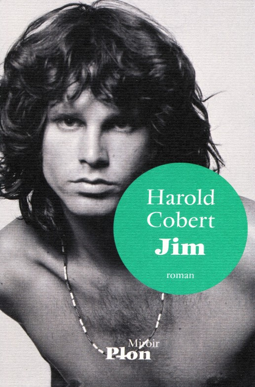

|  |
Jim Morrison's Chronicle Harold Cobert "JIM" - Plon, France, 2014. ISBN 978-2-259-22242-6
I believed that I had read everything
about Jim Morrison, that's why I waited to |
|||
|
La Chronique de Jim Morrison Harold Cobert "JIM" - Plon, France, 2014. ISBN 978-2-259-22242-6 Je croyais avoir tout lu sur Jim Morrison c'est pourquoi j'ai attendu avant de me d�cider � acheter ce livre. J'ai �t� agr�ablement surprise car l'auteur a eu la bonne id�e de faire parler Jim � la premi�re personne comme si il nous racontait lui m�me sa vie, ses boires et d�boires, ses amours, ses succ�s et ses d�sillusions. Et au final on y croit! On se laisse prendre par ces confessions intimes du Roi L�zard qui, si elles ne nous apprennent rien de nouveau sur l'homme, le chanteur, le po�te qu'il �tait ont l'avantage de le rendre plus proche, plus humain. Harold Cobert a bien cern� le personnage de Jim, un homme attachant, qui se retrouve � Paris � la fin de sa vie, d�sabus�, en col�re contre la soci�t�, ses proches et par dessus tout contre lui m�me qui a fini par g�cher toutes les belles promesses qui s'offraient � lui... Un livre � lire donc m�me si l'on croit tout savoir sur Jim Morrison. Pour le moment cet ouvrage est uniquement disponible en fran�ais. � Patricia Devaux pour The Doors Quarterly Magazine Online - 2015 |
||||

|

|